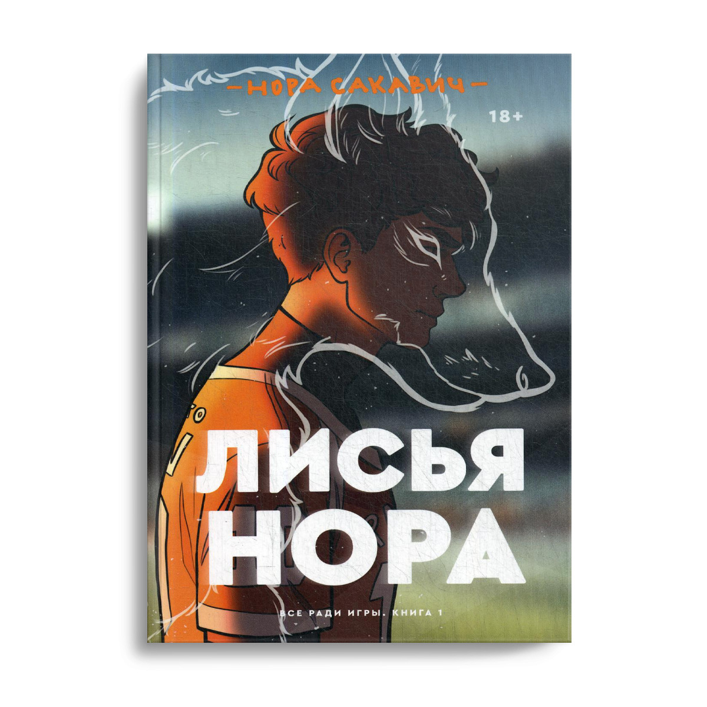
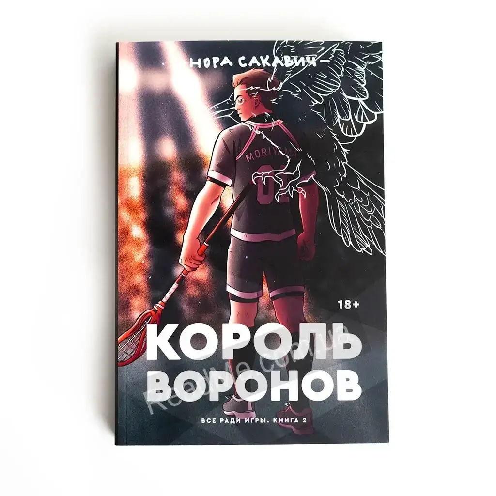
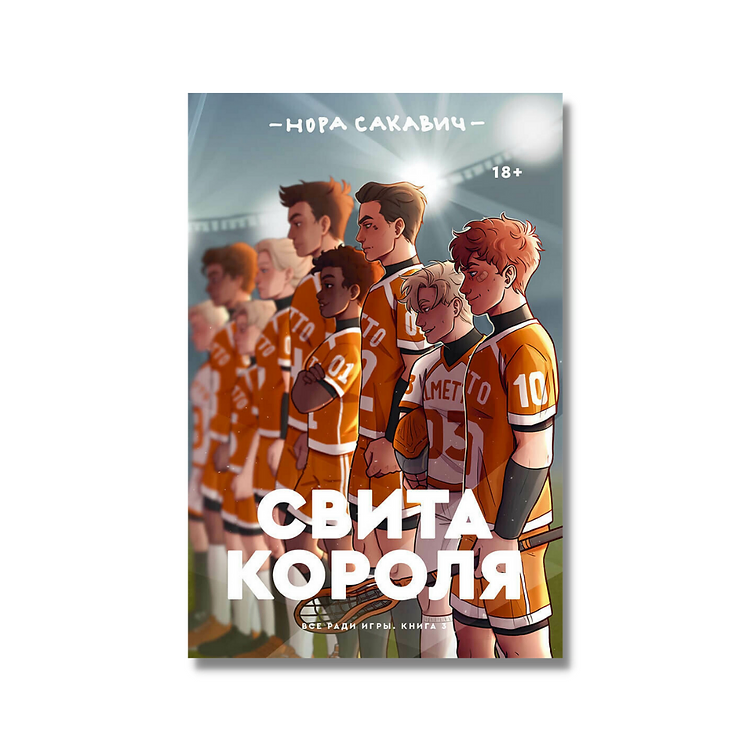

Трилогии
Лисья нора. 1 часть.
«Лисья нора» повествует о команде «Лисов» — игроков экси (вымышленный спорт), которые, будучи отбросами в жизни, пытаются подняться со дна турнирной таблицы и выиграть чемпионат страны. Главный герой, Нил Джостен, скрывается от своего темного прошлого, однако, став частью команды, вынужден сражаться не только с соперниками, но и с новоиспеченными товарищами, каждый из которых хранит свои секреты.
Король воронов. 2 часть.
«Король Воронов» — продолжение бестселлера Норы Сакавич «Лисья нора» и вторая часть сенсационной трилогии «Все ради игры». Смерть товарища, потрясшая «Лисов» вскоре после начала игрового сезона, помогает команде наконец сплотиться. Проблема лишь в том, что Эндрю по-прежнему ни во что не ставит старшекурсников, а без этого победа над главным соперником «Лисов» — «Воронами» — невозможна. Единственным, кто может достучаться до Эндрю, становится Нил, только вот Эндрю никогда не делает ничего бесплатно, а Нил не доверяет никому, кроме себя. Едва контакт между ними налаживается, как на горизонте вновь появляется Рико, намеренный уничтожить новую жизнь Нила, а заодно и всю его команду.
Свита короля. 3 часть.
Книга "Свита короля" автора Норы Сакавич - это завершающая часть сенсационной трилогии "Все ради игры". В ней продолжается история Нила Джостена, который попал в смертельную опасность. Он не думал, что доживет до конца года, но сейчас ему не хочется умирать и он борется за свою жизнь. В то же время, его друзья "Лисы" готовятся к финалу чемпионата. Они жаждут победы и не остановятся ни перед чем, чтобы ее достичь.
Отзывы читателей
Каждый из нас старается спрятаться от своих проблем и переживаний, которые существуют в реальном мире. Книга-это лучший вариант забыться, потеряться и окунуться в тот мир, который видите лишь вы. С трилогией "Все ради игры" познакомилась значительно недавно, но все никак не могу отпустить этих замечательных ребят. Каждая часть трилогии-это отдельная книга, которая имеет свое название. С каждой главой, абзацем, строчкой и словом вам все больше и больше хочется читать дальше. Некоторые моменты тяжело было переносить в психологическом и эмоциональном плане. Подводя итоги, могу сказать, что эта серия книг стоит вашего внимания. С каждой новой главой узнаешь героев все больше, больше, причем они раскрываются с каждой стороны. Понимаешь, что эти ребята пережили, удивляешься их силе воли и характеру. И в конце трилогии вы станете родными, поверьте мне. Благодарю вас за внимание!
Flowers Lover69
По объёму она не маленькая, но увлекает с первых страниц. Я читала несколько раз эту трилогию и каждый раз как первый. У каждого персонажа сложная, продуманная судьба. Трудно не влюбиться в этих ребят. Больше всего мне понравилась вторая книга:"Король воронов". В ней рассказывается о судьбах всех лисов. Читается легко. "Свита короля " не очень удобна для прочтения, тяжело держать, устают пальцы. В трилогии много тяжёлых моментов, неожиданных поворотов событий, где персонажи на грани смерти. Не многие книги заставляли меня плакать, но эти смогли. Однозначно рекомендую!
Софа
Совсем недавно закончила читать эту прекрасную историю. Персонажи этих книг стали мне семьёй, каждого полюбила как родного. В какие то моменты радовалась вместе с ними в какие то грустила(. Очень благодарна автору за такие чудесные книги. Мне так не хотелось отпускать моих мальчиков и девочек, я до сих пор люблю каждого кто был в этой истории, у каждого персонажа есть своя история и она по своему прекрасна. Очень жаль что об этой истории знает достаточно мало людей, хотелось бы чтобы её читали!. Эта история очень волнительная и возможно кому то она покажется похожей и даже чем то поможет. Рекомендую к чтению однозначно!
loliql